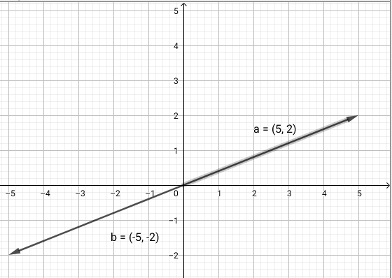

Vi kender allerede
\[\vec{a}\cdot \vec{b} = a_x\cdot b_x+a_y\cdot b_y\]
Nu skal vi se på
\[\vec{a}\cdot \vec{b} = \lvert \vec{a} \rvert \cdot \lvert \vec{b} \rvert \cdot \cos \left( v \right)\]
Udledning
Kombinér de to udtryk for skalarproduktet og isoler vinklen.
\[v = \cos^{-1} \left( \frac{a_x\cdot b_x+a_y\cdot b_y}{\lvert \vec{a} \rvert \cdot \lvert \vec{b} \rvert} \right)\]
Hvis skalarproduktet mellem to vektorer er nul, er de to vektorer vinkelrette på hinanden. \[\text{Hvis} \quad \vec{a} \cdot \vec{b} = 0 \quad \text{så er}\quad \vec{a} \perp \vec{b}\]
Determinanten mellem to vektorer udregnes således:
\[\det \left( \vec{a}, \vec{b} \right) = \begin{vmatrix} a_x & b_x \\ a_y & b_y \end{vmatrix} = a_x \cdot b_y - b_x \cdot a_y\]
Hvad kan determinanten så bruges til?
Hvis determinanten mellem to vektorer er nul, er de to vektorer parallelle. \[\text{Hvis} \quad \det \left(\vec{a},\vec{b}\right) = 0 \quad \text{så er} \quad \vec{a} \parallel \vec{b}\]
Udledning
\[\vec{a} \cdot \hat{a} = 0\]
Bestemmelse af arealer af parallelogrammer og trekanter.
Trekantens areal
En trekants areal
Et parallelograms areal
Læg mærke til de numeriske værdier.
Bestem arealerne til de tre trekanter, hvis hjørner er givet ved følgende:
Hints: Opstil to vektorer, som har begyndelsespunkt i det samme punkt. Benyt herefter determinantmetoden til at bestemme trekantens areal.
Lys med en lygte på både \(\vec{a}\) og \(\vec{b}\) så lyset falder vinkelret ind på \(\vec{b}\). Projektionen af \(\vec{a}\) på \(\vec{b}\) er da skyggen af \(\vec{a}\) på \(\vec{b}\).
Koordinaterne til projektionsvektoren
\begin{align*} \vec{a}_b &= \frac{\vec{a} \cdot \vec{b}}{\lvert \vec{b}\rvert} \cdot \vec{e}_b \\ \vec{a}_b &= \frac{\vec{a} \cdot \vec{b}}{\lvert \vec{b}\rvert^2} \cdot \vec{b} \\ \vec{a}_b &= \frac{\vec{a} \cdot \vec{b}}{\vec{b} \cdot \vec{b}} \cdot \vec{b} \end{align*}
Er den numeriske værdi af det, der står foran enhedsvektoren.
For vektorerne \(\vec{a}=\begin{pmatrix} 5 \\ 2 \end{pmatrix}\) og \(\vec{b} = \begin{pmatrix} 2 \\ 3 \end{pmatrix}\) (De samme vektorer som i eksemplet) skal I
Hvis summen af alle vektorer danner en lukket polygon, er der tale om ligevægt. \[\vec{a} + \vec{b} + \vec{c} +\vec{d} = \begin{pmatrix} 0\\0\end{pmatrix}\]
Summen af alle (kraft)vektorer i et knudepunkt er lig nul. \[\vec{F} + \vec{s}_1 + \vec{s}_2 + \vec{s}_3 = \vec{0}\]
Givet er vektorerne \[\vec{a} = \begin{pmatrix} 4 \\ 3\end{pmatrix}\] og \[\vec{b} = \begin{pmatrix} 6 \\ 1\end{pmatrix}\]
- Bestem koordinaterne til en vektor \(\vec{c}\), der kan holde ligevægt med summen af \(\vec{a}\) og \(\vec{b}\).
(Det er højden af gitterkonstruktionen, som er 3.00 meter.)
Hvis en ret linje skrives som \[a \cdot x + b \cdot y +c =0\] så kan den skrives som \[y = - \frac{a}{b}\cdot x - \frac{c}{b}\]
For linjen \[a \cdot x + b \cdot y +c =0\] Er retningsvektoren \[\vec{v} = \begin{pmatrix} b \\ - a \end{pmatrix}\]
og normalvektoren er da \[\vec{n}= \hat{v} = \begin{pmatrix} a \\ b \end{pmatrix}\]
For linjen \[y = a \cdot x + b\] Er retningsvektoren \[\vec{v} = \begin{pmatrix} 1 \\ a \end{pmatrix}\]
og normalvektoren er da \[\vec{n}= \hat{v} = \begin{pmatrix} - a \\ 1 \end{pmatrix}\]
Hvis en ret linje er beskrevet med ligningen \[l: ax+by+c = 0\] og et punkt er beskrevet som \[P(d,e)\] da kan den vinkelrette afstand mellem linjen og punktet bestemmes vha.
\[\boxed{dist(l,P)= z = \frac{\lvert a \cdot d + b \cdot e + c\rvert}{\sqrt{a^2+b^2}}}\]
En ret linje er givet ved: \[12x+3y+9 =0\]
To parallelle linjer er givet:
Hvordan vil afstandsformlen mellem en ret linje og et punkt mon se ud, hvis linjen er beskrevet ved \[l: y=ax +b\] og punktet ved \[P(d,e)?\]
I dag skal vi bruge geogebra, så fyr op under den s…n
geogebraa = (3,2) b = (-4.0,5) c = (1.0,-6.0) d = (-8,-3)
Nogle gange skriver jeg ; (semikolon) for at separere x- og y-koordinater fra hinanden, når jeg skriver punkter op.
Prøv at skrive de samme vektorer ind i geogebra, bare med ; i stedet for ,.
aa = (3;2) bb = (-4.0;5) cc = (1.0;-6.0) dd = (-8;-3)
aa = (3;2) bb = (-4.0;5) cc = (1.0;-6.0) dd = (-8;-3)
a1=(1;2) a2=(2;2) a3=(3;2) a4=(4;2)
Hvad ser I?
Hvad sker der, hvis det første koordinat er negativt?
b1=(-1;2) b2=(-2;2) b3=(-3;2) b4=(-4;2)
c1=(2;1) c2=(2;2) c3=(2;3) c4=(2;4) c5=(2;5) c6=(2;6) c7=(2;7) c8=(2;8) c9=(2;9) c10=(2;10)
algebravinduet?bolleIndtast nu
d1=(2;10⁰) d2=(2;40⁰) d3=(2;60⁰) d4=(2;90⁰) d5=(2;120⁰) d6=(2;180⁰) d7=(2;230⁰) d8=(2;270⁰) d9=(2;350⁰)
(2;10)
Angiver vektor med længde og vinkel i radianer
(2;10⁰)
Angiver vektor med længde og vinkel i grader
(3;34⁰) mens jeres matematikbog siger \(\vec{a} = 3 \angle 34^{\circ}\).\[\vec{a} = \lvert \vec{a} \rvert \angle v = \begin{pmatrix} \lvert \vec{a} \rvert \cdot \cos \left( v \right) \\ \lvert \vec{a} \rvert \cdot \sin \left( v \right)\end{pmatrix}\]
Omregn \(\vec{a} = 4\angle 120^{\circ}\) til kartesiske koordinater.
Omregn følgende vektorer fra polære til kartesiske koordinater.
\[\vec{a} = \begin{pmatrix} a_{x} \\ a_{y}\end{pmatrix}= \lvert \vec{a} \rvert \angle v\]
Længden: \[\lvert \vec{a} \rvert = \sqrt{a_x^2+a_y^2}\]
Vinklen: \[v = \tan^{-1} \left( \frac{a_y}{a_x} \right)\]
Eksempel
\[\vec{a} = \begin{pmatrix} 5 \\2 \end{pmatrix} \quad \vec{b} = \begin{pmatrix} -5 \\-2 \end{pmatrix}\]
Eksempel fortsat: Geogebra

Angiv følgende vektorer på polær form.